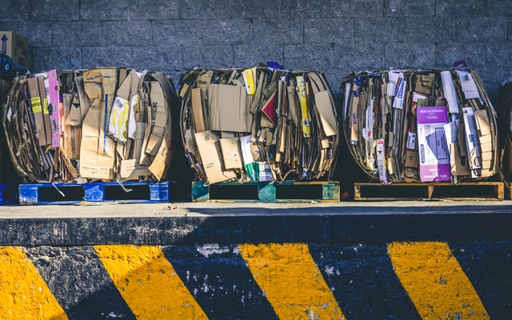

종이(영어: paper)는 식물의 섬유질을 물에 불려 평평하게 엉기게 하여 잘 말린 물질이다. 책의 재료로 쓰이고 그 위에 글을 쓰거나 물을 흡수하는 성질을 이용하여 화장에 쓰이기도 하며, 일회용 도구를 만드는 재료로도 범용된다.
또한 종이를 가리키는 영어 낱말(또는 인도-유럽어에서도 비슷한 이름) 페이퍼(Paper)는 파피루스에서 유래하였다고 전래한다.
펄프 형태의 제조 과정은 중국에서 서기 2세기 초, 이르면 서기 105년에 개발된 것으로 간주되며[1] 최초의 고고학적 종이는 중국에서 기원전 2세기로 거슬러 올라간다.
